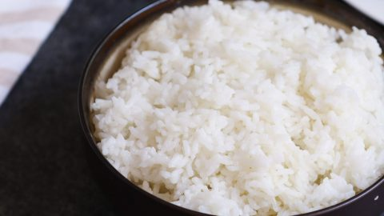

Minute Rice

Description:
Microwave rice: One of the best allies a college student could ever ask for!
But it's not all sunshine and rainbows, usually it will end up bland and boring, so here's a quick and easy recipe to make microwave rice better on a shoestring.
Ingredients:
To make this quick and easy rice recipe you will need:
- 100g of Microwave rice of your choosing
- A can of tuna
- Some olive oil and salt
Steps:
In order to enjoy this awesome rice recipe you will have to:
- Tear a hole into the lid or bag of the rice container
- Put it in the microwave for as long as instructed on the container (Usually one minute)
- Take the rice out and put it on a plate
- Sprinkle some salt and a dash of olive oil
- Mix a bit
- Put the contents of the tuna can on the plate
- Mix it all as desired
- Your deluxe student rice is ready to be served!
Go back to main page